Operation Surf
Simplifying volunteer coordination for people behind the event
With Hack4Impact Cal Poly, our cross-functional team designed a volunteer and administrative portal for Operation Surf, a nonprofit that organizes surf therapy events for injured veterans.
What we worked on as a team
We designed a portal to help administrators organize events, coordinate volunteers, and complete time-sensitive tasks with less friction during an event.
My contribution
I focused on understanding the admin workflow and designing the interactions that made it easier to navigate: region-based event organization, group email, and clear confirmation states.
- My role
- UX Research · User Flows · Wireframing · Prototyping · Interaction Design
- Team
- 1 Product Manager · 3 Designers · 5 Developers
- Organization
- Hack4Impact Cal Poly × Operation Surf
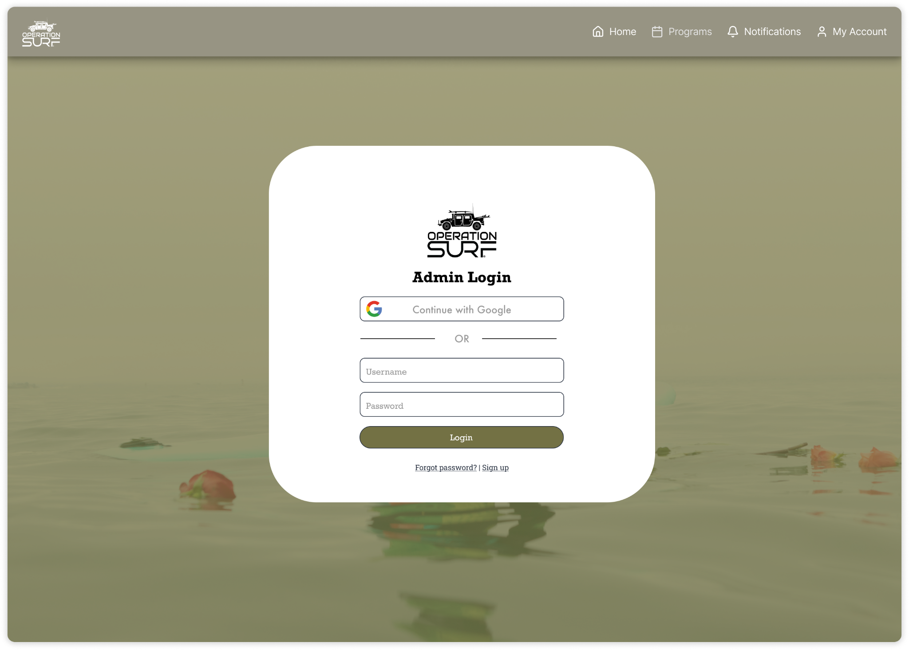
The problem
Replacing a system that wasn’t built around their workflow
Operation Surf was using POINT, an existing volunteer management platform, to organize volunteers and events.
Through our conversations with stakeholders, I started to understand where our initial designs—and the existing system—were falling short.
Many of the people using the portal weren’t very comfortable with technology. During an event, they didn’t want to spend time figuring out how the system worked.
They needed interactions to be fast, familiar, and obvious.
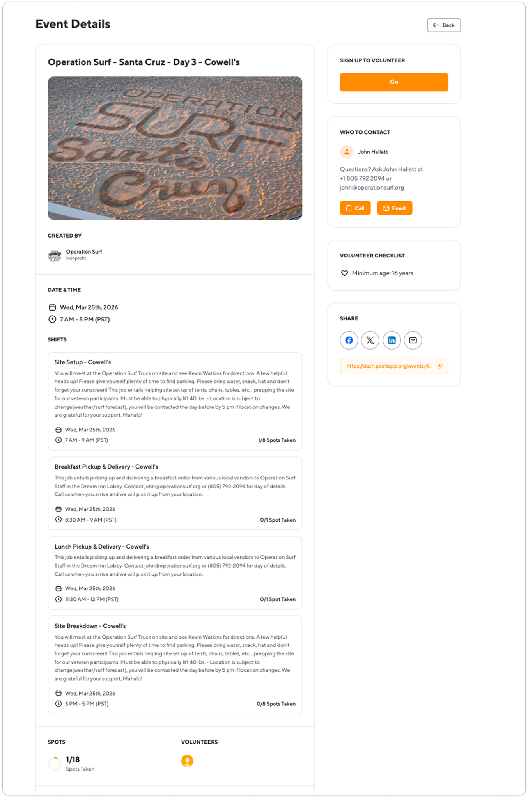
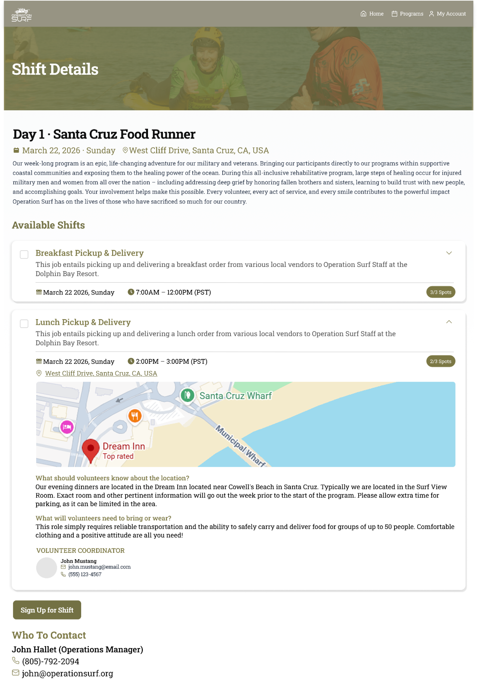
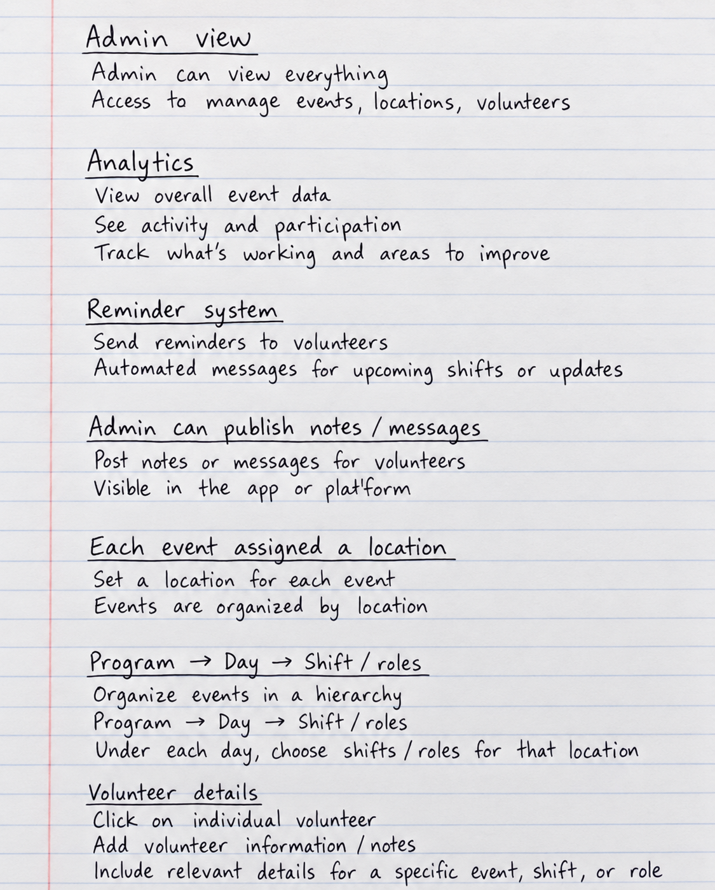
Understanding the workflow
Asking the questions that changed our direction
Stakeholder conversations became an important part of my design process. Instead of only asking whether our screens met the original requirements, I started paying more attention to how administrators were actually completing these tasks.
Where were they spending unnecessary time? What were they repeatedly doing manually? What information did they need during an event? Where could our portal remove a step?
These conversations revealed several opportunities to simplify the experience—from how events were organized to how administrators communicated with volunteers.
Organizing a growing number of events
Helping admins find what they need faster
Operation Surf holds events throughout the year across a limited number of regions. Each event can also require multiple volunteer roles and shifts.
As more events are created, putting everything into one view could quickly become difficult for an administrator to scan and manage.
I introduced region-based tabs to give the information a clearer structure. Instead of searching through one long collection of events, admins could move between regions and immediately see the events and volunteer roles associated with each one.
Region → Event → Roles → Volunteers
Rather than adding more information to the screen, I wanted to make the existing information easier to find.
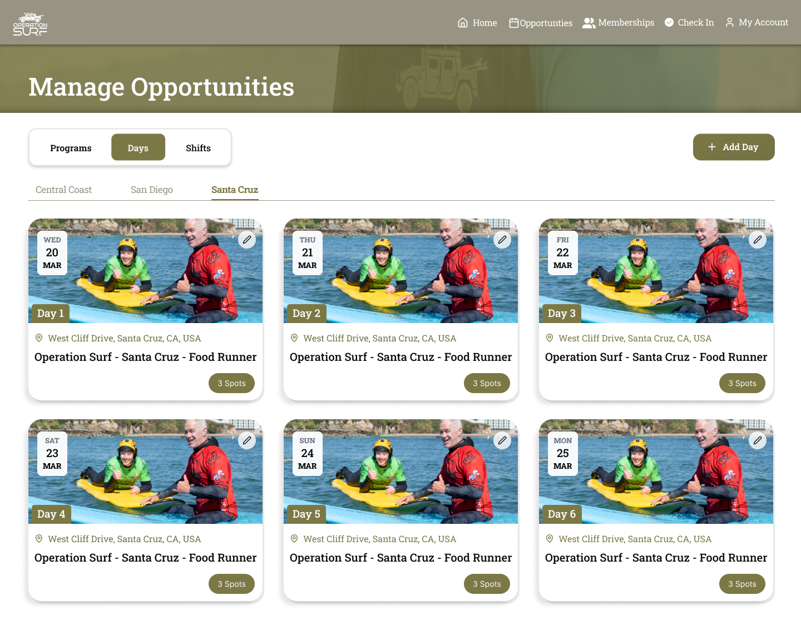

Simplifying communication
What if the admin could email everyone from here?
Administrators frequently needed to communicate event information to volunteers, but contacting them individually added unnecessary work.
I proposed adding a group email feature directly into the portal. An administrator could select an event, click the email icon and send information to multiple volunteers associated with that event at once.
Our database was already collecting each volunteer’s email address individually. I discussed the idea with the team and developers to make sure the interaction made sense from both the user and implementation side.
Designing for clarity
Did that actually work?
Our initial designs didn’t always provide feedback after users completed an action.
A user could submit a form, create an event, or delete something—but the interface didn’t clearly tell them that the action had been completed. For someone already less comfortable with technology, that uncertainty could easily become confusing.
Did I submit it? Should I click again? Did the event actually get deleted?
I brought this up with my design team, and we introduced clear feedback states for important interactions: Form submitted ✓ · Event created ✓ · Event deleted ✓
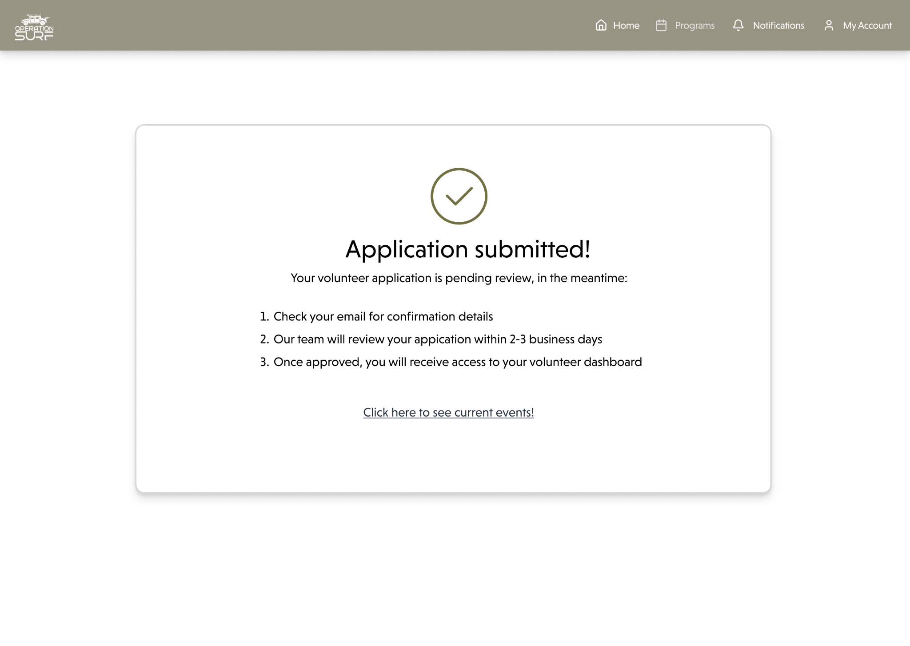
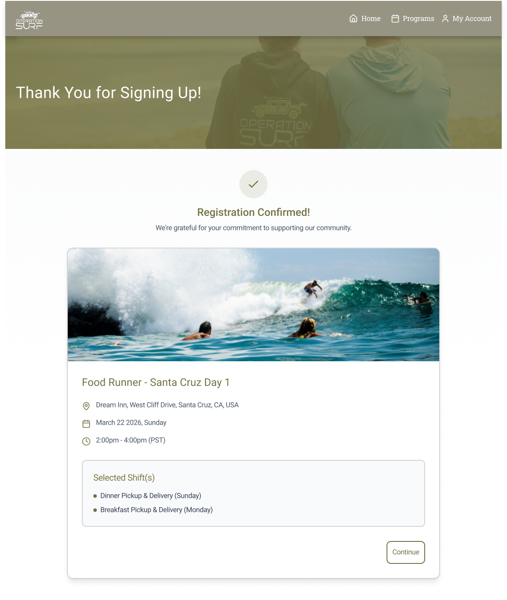
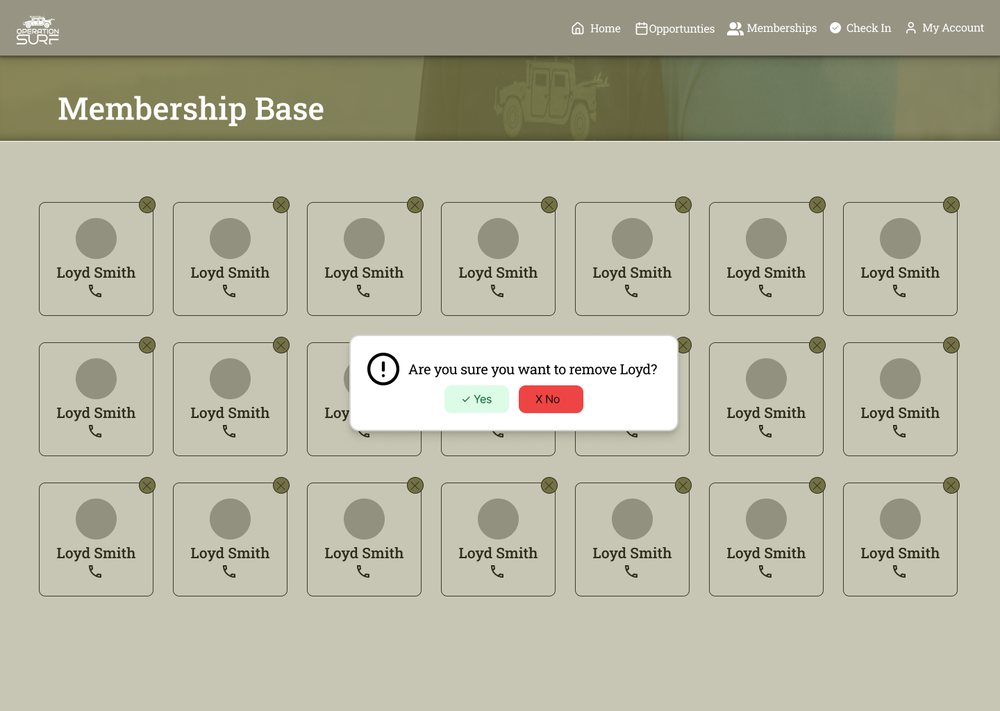
Aligning mental models
Designing what users expect to happen
A principle that guided these decisions was something I had learned about mental models. As designers, it is easy to understand an interface because we already know how we intended it to work. The user doesn’t have that context.
The designer’s mental model shouldn’t require the user to learn it. The interface should meet the user’s mental model instead.
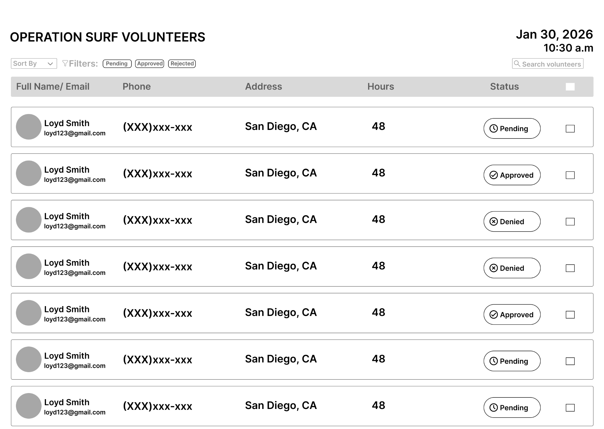
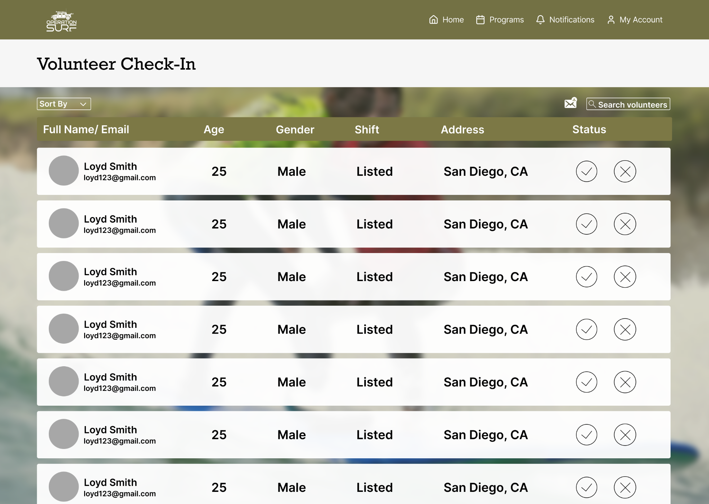
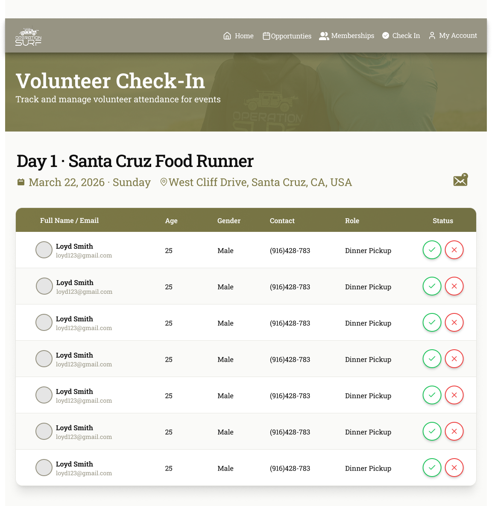
Designing with a cross-functional team
Design didn’t stop at the Figma file
Working alongside a product manager, two other designers, and five developers meant that my ideas constantly had to move between user needs, design decisions, and technical feasibility.
Rather than designing everything first and thinking about implementation later, I could bring ideas to developers early and understand what was realistic within our system.
The group email feature was one example: knowing that our database already stored volunteer email addresses helped me think about the feature not only as a designer, but as part of a larger system.
Outcome
A portal that better matched how the team worked.
During on-site stakeholder testing, the updated prototype improved task efficiency by 5%. The result was not simply a more polished interface—it was an experience that made common event-day tasks easier to complete.
Administrators preferred the updated version for its better sorting, cleaner layout, and group email capability. The client was especially excited by group email because it reduced the administrative load during busy on-site events.
Reflections + learnings
Understanding the workflow before fixing it
This project changed the way I think about designing for efficiency. At first, I was focused on whether our interfaces met the project’s requirements. Stakeholder conversations made me realize that a design can technically solve the problem and still not fit naturally into someone’s workflow.
The most meaningful improvements were often the small moments that removed friction: finding the right event without searching through everything, sending one message instead of contacting volunteers individually, and knowing immediately that an action was successful.
I started looking beyond individual screens and asking what happens before and after each interaction.
It also reinforced something I had learned about mental models: I can’t design based only on what makes sense to me as the designer.
Operation Surf became less about designing a portal and more about understanding a workflow well enough to simplify it.